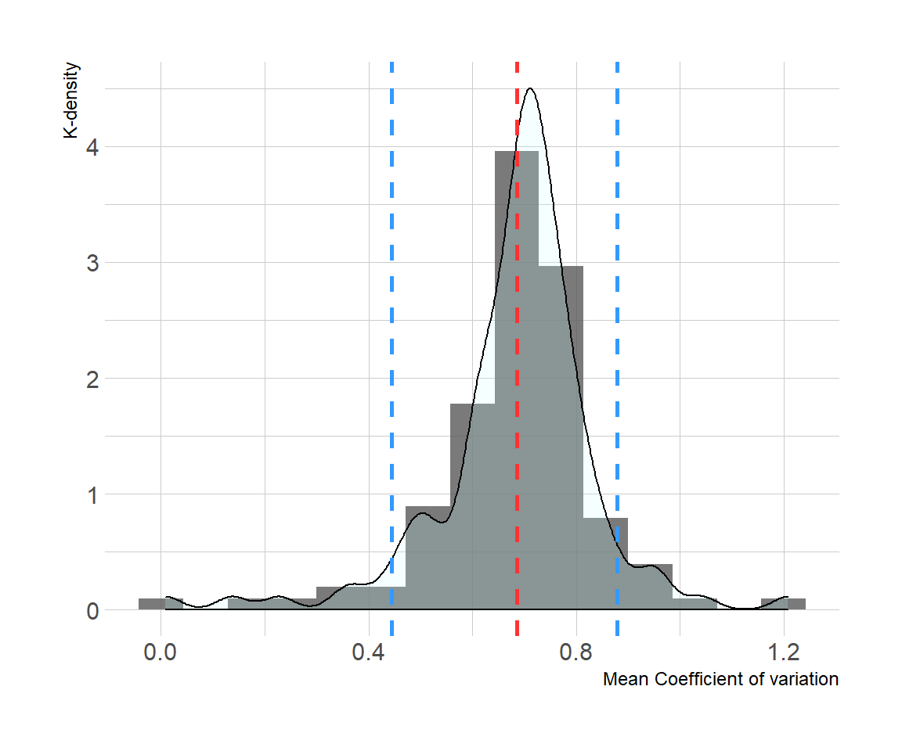

This document builds upon research first presented in the discussion paper Options for Improving Use of ESG for Sovereign Bond Analysis (World Bank, 2018).
Interviews ESG data providers found that most obtain at least some and often a subsantial amount of data from World Bank databases. 137 indicators were specifically identified from these interviews, of which 127 could be mapped to active databases in the World Bank’s data API, enabling the authors to perform a rapid assessment of data coverage and gaps. The paper further found that “data coverage is a significant issue in WBG data used for ESG.” Looking at most recent available values (MRVs) by indicator and country, the paper found that just 41 ESG indicators (out of 127) had a value from 2017 or later (1 year old) for at least 50% of countries; 74 ESG indicators had a value from 2015 or later (3 years old) for at least 50% of countries. However, while the 2018 paper suggested a set of options for improving the availability and usefulness of ESG data, it stopped short of further investigating the reasons that might give rise to gaps in data coverage or suggesting specific strategies to address them.
The objective of this report is to pick up where the previous paper left off, and to better understand the circumstances that explain gaps in data coverage. To do so, this report identifies a set of “explanations” that could be partially responsible for gaps in any particular series. The hope is that with a better understanding of why gaps occur and the pervasiveness of various explanatory factors, effective steps can be established to eliminate or mitigate gaps.
This report uses a different selection of ESG indicators than that used in the 2018 report: 134 indicators compared to the original 137, but not excluding indicators in inactive databases as this is an important consideration in the gaps analyis. The sample of indicators has expanded to include additions from two new products: the forthcoming Blackrock Sovereign Sustainability Index (BSSI) and the World Bank’s own curated ESG dataset. In addition, further research into the original group of data providers has produced additional indicators. Conversely, we decided to remove some indicators used exclusively by one data provider (Versk-Maplecroft) because strong similarities among those indicators (e.g., very similar trade or debt measures) may have been skewing the results.
The other factor that has changed since the 2018 report is of course that it is now over a year later, and some underlying databases have been updated (at least once) with new data, while others have not been updated. As a result, if the same analysis were peformed today with 2019 as a reference the results would likely be different than those above. That said, this document attempts to provide a more comprehensive and current understanding of data availability and coverage as context for the gaps analysis.
The availability of ESG indicators by country is dynamic over time. As shown in Figure 1.1, not all indicators are available in all countries neither they are available in all years. The bottom left of the chart shows the less available indicators, whereas the top right of the chart shows the most available indicators. From a different perspective, the availability of indicators goes from red to blue. Several insights are drawn from this chart.
Figure 1.1: Number of countries per indicator over time
Some indicators have very low availability over time. In general, 36 (17.91%) indicators are available for less than 100 countries in average over time. Yet, not all indicators with low coverage have the same characteristics. For instance,
There are a few indicators that show a remarkable improvement in country coverage over time. Despite their early appearance in the beginning of the 1980’s, indicators that come from household surveys such as the Poverty headcounts or Gini index have shown a dramatic improvement in country coverage in the beginning of the 2000’s. The coverage improved from about five countries in the 80’s to more than 70 countries per year in the decade of the 2000’s. However, these indicators suffer from a compilation lag that requires more than two years from time or recollection to the time of publication.
Other indicators, especially the ones related to the governance component. have improved the frequency of publication. For instance, Governance effectiveness, Political stability and absence of violence, and Voice and accountability were collected every three years at the decade of 1990, but increased their frequency to every year since the 2000.
All the indicators with a stable yellow vertical line are characterized by being stable over time but with a country coverage of about 120 countries per year. Among those, we could find Prevalence of HIV in adult population, non-residents patents application, or Physicians per 1,000 people.
With the exception of a few indicators like Ease of doing business index or Total tax and contribution rate, most recent value (MRV) of most indicators is two or more years old. However, some indicators with remarkable good coverage in the previous decade suddenly declined in the last five years. For instance, CO2 emissions or Renewable electricity output had a yearly coverage of more than 180 countries until 2014/15 and thereafter it suddenly declined to one country, Sudan, for CO2 emissions or zero countries for Renewable electricity output. A similar story happened to Net energy imports, Electricity production from nuclear sources, or Hospital beds. However, this set of indicators did not have such a good coverage as CO2 emissions before the decline.
Finally, the indicators at the right side of the chart present the best country coverage over time. They are characterized by their intense blue color. For instance, Population density, Adjusted savings: mineral depletion, or Land area have a remarkable and stable high country coverage.
ESG indicators belong to set of measures of wide diversity. Some of them are estimated every few years, whereas others are produced every three or six month. In addition, some indicators are bounded by construction—like percentages or indexes—, others are normalized across countries–like indicators in PPP values–, others are in units based on population size—like all the indicators of the type, x by 1,000 people—, among many other kinds of measures and units. This variety makes it difficult to compare directly one indicator to another, especially if some or all the indicators are weighted in any particular fashion.
Figure 1.2: Density of coefficient of variation of ESG indicators
To alleviate this problem, a standard measure of variability could be applied to all indicators. Those indicators that vary the most, deserve the most attention by investors, whereas those that vary the less could be revisited every few years to recalibrate models. To make variability comparable across countries, it was necessary to rescale all indicators and linearly interpolate missing values by year. Then, the coefficient of variation (CV) was estimated at indicator/country level in order to capture to temporal variability of each indicators in each country. Finally, an average of CVs across countries is calculated to get measure of variability at the indicator level. Figure 1.2, shows the distribution of such estimates.
The average CV of most indicators (80.99%) fall between 1 and 2, with an overall mean of 1.41. Since the CV is a measured of dispersion, a mean above 1 conveys the idea that, in average, the ESG indicators have a relatively high variability with respect to their own mean value. However, given that the majority of indicators are around the mean, all indictors have similar variability. The light left tail of the distribution—those that fall below 1 in CV—is composed by 15 indicators (12.4%), whereas the right tail—those indicators that fall above 2 in CV—is composed by 3 indicators (2.48%). Table 1.1 shows the indicators that fall in the left and right tail of the distribution.
Table 1.1: ESG indicators with lowest and highest volatility
| Low volatility (CV <= 1) | High volatility (CV >= 2) |
|---|---|
| Renewable internal freshwater resources, total (billion cubic meters) | PM2.5 air pollution, mean annual exposure (micrograms per cubic meter) |
| Strength of legal rights index (0=weak to 12=strong) | Overall surplus/deficit, excluding current grants (current LCU) |
| Land area (sq. km) | GDP growth (annual %) |
| Electricity production from nuclear sources (% of total) | |
| Adjusted savings: mineral depletion (current US$) | |
| Adjusted savings: net forest depletion (% of GNI) | |
| Adjusted savings: energy depletion (% of GNI) | |
| Internet users (per 1,000 people) | |
| Terrestrial and marine protected areas (% of total territorial area) | |
| Electricity production from coal sources (% of total) | |
| Prevalence of undernourishment (% of population) |
The first column of Table 1.1 shows those indicators with low volatility. As expected, indicators like renewable internal freshwater, land area, or strength of legal rights do not change often. Thus, they deserve little attention on a yearly basis for decision-making process for investment. On the other hand, the right column of the table shows the most volatile indicators, whose standard deviations are two times higher than their means.
NOTE: We need to check why some indicators like internet users have low volatility
In cotnrast to Figure 1.2, which presents the overall view of the volatility of ESG indicators, Figure 1.3 shows the variability of each indicator at the country level. For some indicators, the level of variability range widely. For instance, the coefficient of variation of Fossil fuel energy consumption varies from 0.84 in Niger to more than 5 in Qatar. Something similar happens with Renewable energy consumption or, in a small scale, to GDP growth. For the rest of indicators, Figure 1.3 shows that their variability across countries is relatively stable.
Figure 1.3: Coefficient of variation by country and indicators
Page built: 2020-01-15